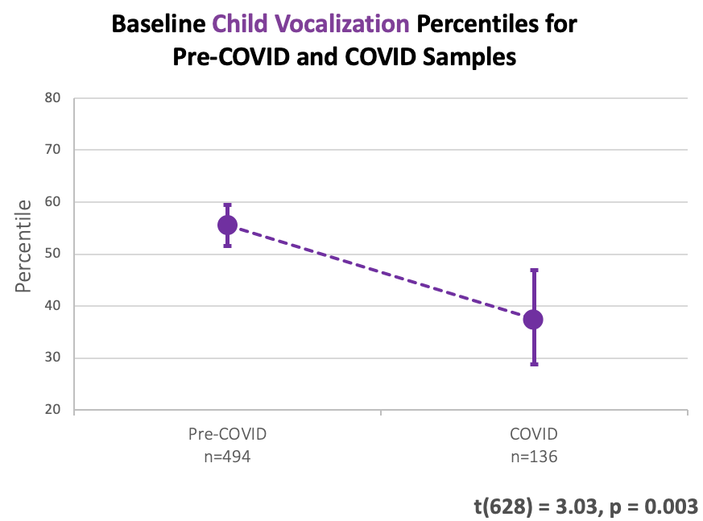
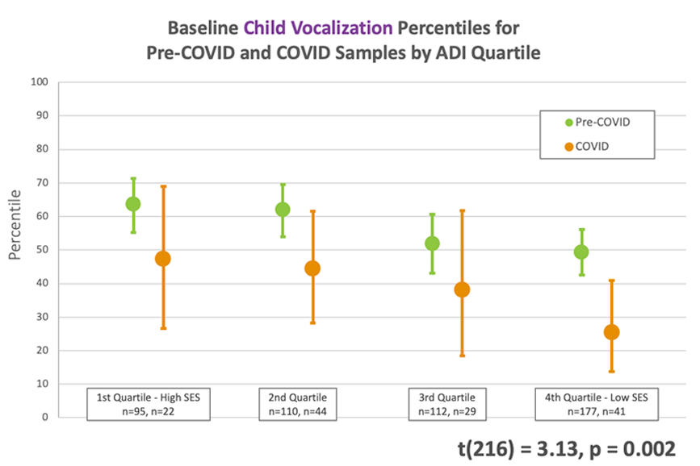
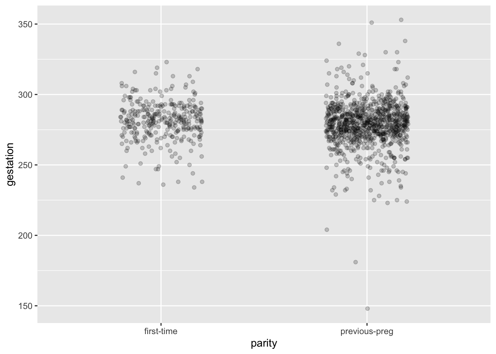
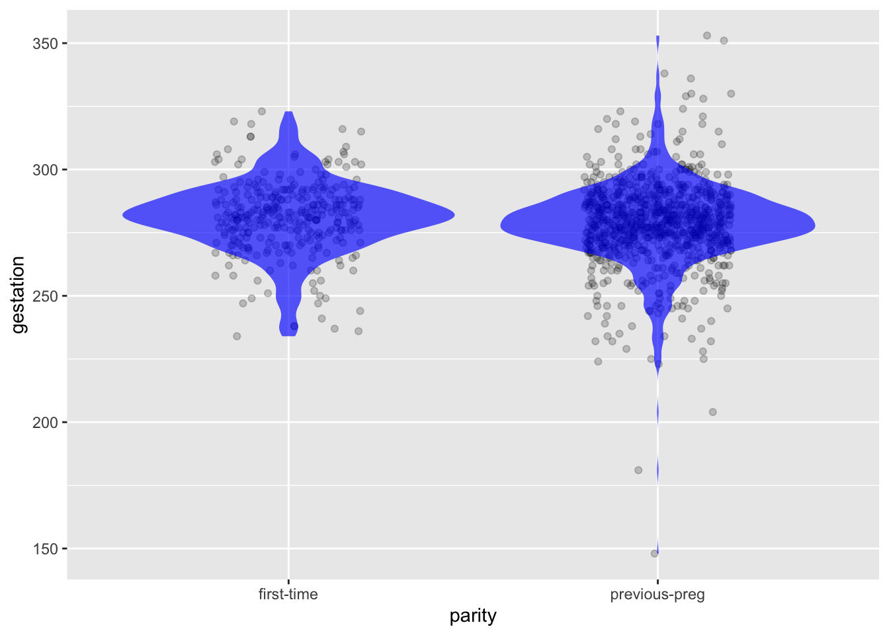

Gestation %>%
summarize(variance = var(gestation))| variance |
|---|
| 256.887 |
These lessons are about “statistical thinking,” a phrase which includes habits of mind, routine questions to ask, and understanding of which statistical measures are informative—and which not—in different contexts. The goal of statistical thinking is to understand “how and when we can draw valid inferences from data.” [Source] The word “valid” means several things at once: faithful to the data, consistent with the process used to assemble the data, and informative for the uses to which the inferences are to be directed.
Every person has a natural ability to think. We train our thinking skills by observing and emulating the logic and language of people and sources deemed authoritative. We have resources spanning several millennia to hone our ability to think. However, statistical thinking is a comparatively recent arrival on the intellectual scene, germinating and developing over only the last 150 years. As a result, hardly anything that we hear or read exemplifies statistical thinking.
In general, effective thinking requires us to grasp various intellectual tools, for example, logic. Our mode of logical thinking was promulgated by Aristotle (384–322 BC) and, to quote the Stanford Encyclopedia of Philosophy, “has had an unparalleled influence on the history of Western thought.” In the 2500 years since Aristotle’s time, the use of Aristotelian logic has been so pervasive that we expect any well-educated person to be able to identify logical thinking. For example, the statement “John’s car is red” has implications. Which of these two statements are among those implications? “That red car is necessarily John’s,” or “The blue car is not John’s car.” Not so hard!
The intellectual tools needed for statistical thinking are, by and large, unfamiliar and non-intuitive. These Lessons are intended to provide the tools you will need to engage in effective statistical thinking.
To get started, consider this headline from The Economist, a well-reputed international news magazine: “The pandemic’s indirect effects on small children could last a lifetime.” As support for this claim, the headlined article provides more detail. For instance:
“Stress and distraction made some patients more distant. LENA, a charity in Colorado, has for years used wearable microphones to keep track of how much chatter babies and the care-givers exchange. During the pandemic the number of such "conversations" declined. ….”[g]etting lots of interaction in the early years of life is essential for healthy development, so these kinds of data "are a red flag".” The article goes on to talk of “children starved of stimulation at home …..”
This short excerpt might raise some questions. Think about it briefly and note what questions come to mind.
For those already along the road toward statistical thinking, the phrase, “the number of such conversations declined” might prompt this question: “By how much?” Similarly, reading the claim that “getting lots of interactions … is essential for healthy development,” your mind might insist on these questions: How much is “lots?” How does the decline in the number compare to “lots?”
Not finding the answer to these questions in the article’s text, it would be sensible to look for the primary source of the information. In our Internet age, that’s comparatively easy to do. The LENA website includes an article, “COVID-era infants vocalize less and experience fewer conversational turns, says LENA research team.” The article contains two graphs. (?fig-lena-two-graphs)
knitr::include_graphics("www/Lena-fig1.png")
knitr::include_graphics("www/Lena-fig2.png")

To make any proper sense of the graphs in ?fig-lena-two-graphs, you need some basic technical knowledge. For example, what do the vertical bars in the graph mean? And the subcaptions, “t(628) = 3.03, p = 0.003” and “t(216)= 2.13, p=0.002”: What do they mean, if anything? Turning back to the text of The Economist, do these graphs justify raising a “red flag?” More basically, are these graphs the “data,” or is there more data behind the graphs? What would that data show?
The LENA article does not link to supporting data, that is, what lies behind the graphs in ?fig-lena-two-graphs. But the LENA article does point to other publications.
“These findings from LENA support a growing body of evidence that babies born during the COVID pandemic are, on average, experiencing developmental delays. For example, researchers from the COMBO (COVID-19 Mother Baby Outcomes) consortium at Columbia University published findings in the January 2022 issue of JAMA Pediatrics showing that children born during the pandemic achieved significantly lower gross motor, fine motor, and personal-social scores at six months of age.”
To the statistical thinker, phrases like “red flag,” “growing body of evidence,” and “significantly lower” are weasel words, that is, terms “used in order to evade or retreat from a direct or forthright statement or position.” [Source] In ordinary thinking, such evasiveness or lack of forthrightness would naturally prompt concern about the reliability of the claim. It makes sense to look deeper, for instance, by checking out the JAMA article. Many people would be hesitant to do this, anticipating that the article would be incomprehensible and filled with jargon. An important reason to study statistical thinking is to tear down barriers to substantiating or debunking claims. In fact, the JAMA article contains very little that requires knowledge of pediatrics or the meaning of “gross motor, fine motor, and personal-social scores,” but a lot that depends on understanding statistical notation and convention and—more critical —the reasoning behind the conventions.
The tools of statistical thinking are the tools for making sense of data. Evaluating data is essential to determine whether to rely on claims supposedly based on those data. In the words of eminent engineer and statistician W. Edwards Demming: “In God we trust. All others must bring data.” And former President Ronald Reagan famously quoted a Russian proverb: “Trust, but verify.” Unfortunately, until you have the statistical thinking tools needed to interpret data reliably, all you can do is trust, not verify.
Learning a new way of thinking is genuinely hard. As you learn statistical thinking, it may help to have a concise definition. The following definition captures much of the essence of statistical thinking:
Statistic thinking is the accounting for variation in the context of what remains unaccounted for.
Implicit in this definition is a pathway for learning to think statistically:
The next three sections briefly touch on each of these three topics.
Variation itself is nature’s only irreducible essence. Variation is the hard reality, not a set of imperfect measures for a central tendency. Means and medians are the abstractions. —– Stephen Jay Gould (1941- 2002), paleontologist and historian of science.
To illustrate variation, let’s consider a process fundamental to human life: gestation. We all know that human pregnancy “typically” lasts around nine-months, but that the duration isn’t known in advance.
Figure 19.3 shows data from the Gestation data frame. In this data frame, each of the 1200 rows is one pregnancy and birth about which several measurements were made. The gestation variable records the length of the pregnancy (in days).
Gestation <- Gestation %>%
mutate(parity = ifelse(parity==0, "first-time", "previous-preg"))
Plot1 <- Gestation %>%
ggplot(aes(x=parity, y=gestation)) +
geom_jitter(alpha=0.2, width=0.2, height=0)
Plot1
Figure 19.3 divides the 1200 births in the Gestation data frame according to the variable parity, which describes whether or not the pregnancy is the mother’s first.
The variation in gestation is evident directly from the dots in the graph. One strategy for describing variation is to specify an interval: the span between a lower and an upper value. For instance,
A more subtle description avoids setting hard bounds in favor of saying which durations are common and which not. This common-or-not description is called a “distribution.” The “histogram” is a famous style of presentation of a distribution. Even elementary-school students are introduced to histograms; they are easy to draw. But we have more important concerns; we want to be able to show relationships between variables and we want, whenever possible, to put the graphical summaries of data as a layer on top of the data themselves. And we have the computer as a tool for making graphics. Consequently, our preferred format for displaying distributions is a smooth shape, oriented along the vertical axis. The width of the shape expresses how common is the corresponding region of the vertical axis. Figure 19.4 shows the density display layered on top of the pregnancy data. For reasons that may be evident, this sort of display is called a “violin plot.”
Plot1 +
geom_violin(aes(group=parity), fill="blue", alpha=0.65, color=NA)
The shapes of the two violins in Figure 19.4 are similar, suggesting that the variation in the duration of pregnancy is about the same for first-time mothers as for mothers in a second or later pregnancy.
There is a strong link between the interval descriptions of variation and the density display. Suppose you specify the fraction of cases that you want to include in an interval description, say 50% or 80%. In terms of the violin, that fraction is a proportion of the overall area of the violin. For instance, the 50% interval would include the central 50% of the area of the violin, leaving 25% out at the bottom and another 25% out at the top. The 80% interval would leave out only 10% of the area at the top and bottom of the violin. This suggests that the interval style of describing variation really involves three numbers; the top and bottom of the interval as well as the selected percentage (say, 50% or 80%) used to find the location of the top and bottom.
Yet another style for describing variation—one that will take primary place in these Lessons—uses only a single-number. Perhaps the simplest way to imagine how a single number can capture variation is to think about the spread or distance between the top and bottom of an interval description. In taking such a distance as the measure of variation, we are throwing out some information. Taken together, the top and bottom of the interval describe two things: the location of the values and the spread among the values. These are both important, but it is the spread that gives a pure description of variation.
Early pioneers of statistics took some time to agree on a standard way of measuring the spread. For instance, should it be the spread between the top and bottom of a 50% interval or an 80% interval, or something else. In the end, the selected standard focussed on something more basic: the differences between pairs of individual values.
It works like this. For a data frame with \(n=2\) rows, the spread in a variable can be measured simply as the difference between the two values. For instance, suppose the gestation variable had only two entries, say, 267 and 293 days. The spread or distance between these is \(293-267 = 26\) days. Of course, we don’t intend to measure spread with a negative number. One solution is to use the absolute value of the difference. However, for subtle mathematical reasons relating to—of all things!—the Pythagorean theorem, we avoid the possibility of a negative spread by using the square of the difference, that is, \((293 - 267)^2 = 676\) days-squared.
To extend this very simple measure of variation to data with \(n > 2\) is simple: look at the square difference between every possible pair of values, then average. For instance, for \(n=3\) with values 267, 293, 284, look at the differences \((267-293)^2, (267-284)^2\) and \((293-284)^2\) and average them! This simple way of measuring variation is called the “modulus” and dates from 1885. Since then, statisticians have standardized on a closely related measure, the “variance,” which is the modulus divided by \(\sqrt{2}\). Either one would work, but there are advantages to standardizing on one: the variance.
Calculating the variance is straightforward, Here’s the variance of gestation:
Gestation %>%
summarize(variance = var(gestation))| variance |
|---|
| 256.887 |
A consequence of the use of squaring in defining the variance is the units of the result. gestation is measured in days, so var(gestation) is measured in days2. The advantage to this will only become clear later in these Lessons. For now, you might prefer to think about the square-root of the variance, which has been given the name “standard deviation.”
Gestation %>%
summarize(standard_deviation = sd(gestation))| standard_deviation |
|---|
| 16.02769 |
The word “account” has several related meanings.1
Synonyms for “account” include “description,”report,” “version,” “story,” “statement,” “explanation,” “interpretation,” “sketch,” and “portrayal.” “Accountants” and their “account books” keep track of where money comes from and goes to.
These various nuances of meaning, from a simple arithmetical tallying up to an interpretation or version serve the purposes of statistical thinking well. When we “account for variation,” we are telling a story that tries to explain where the variation might have come from. An accounting of variation is not necessarily definitive, true, or helpful. Just as witnesses of an event can have different accounts, so there can be many accounts of the variation even of the same variable in the same data frame.
There are many formats for stories, many ways of organizing facts and data, and many ways of accounting for variance. In these Lessons, we will use regression modeling almost exclusively as our method of accounting. Here, for example, are two different accounts of gestation:
lm(gestation ~ 1, data=Gestation) %>% coef()(Intercept)
279.3385 lm(gestation ~ parity, data = Gestation) %>% coef() (Intercept) parityprevious-preg
281.261981 -2.585058 In the R language, expressions like gestation ~ 1 and gestation ~ parity are called “tilde expressions.” They are the means by which the modeler specifies the structure of the model that is to be built. Training (or “fitting”) translates the model specification into an arithmetic formula that involves the explanatory variables and numerical coefficients.
The coefficients from a regression model are part of an accounting for variation. Learning how to read them is an important skill in statistical thinking. For instance, the coefficient from a model in the form y ~ 1 is always the average value of variable y. In contrast, in a model like y ~ x, the “intercept” is a baseline value and the x-coefficient describes what part of the variation in y can be credited to x.
Figure 19.3 is an example of what we call the RESPEX graphics style. Each RESPEX graphic is made to coordinate with aregression model of the data. Every regression model has a response variable. Likewise, every RESPEX graphic shows the response variable on the vertical axis. Similarly, RESPEX graphics place an explanatory variable on the horizontal axis. If there is more than one explanatory variable, they are encoded graphically using color then faceting.
RESPEX stands for “RESPonse versus EXplanatory,” but you might like to think of it as data graphics drawn with “respect” to a model.
Regression models always have a quantitative response variable, although explanatory variables can be either quantitative or categorical. But, often, the modeling situation calls for a response variable that is categorical. Expert modelers can use specialized modeling methods to handle such situations. However, some of the power of these specialized methods is available to the beginning modeler by a little trick. When categorical response variables have just two levels, e.g., Alive/Dead, Promoted/Not, or Win/Loss, they can be transformed to a numerical representation using 0 for one level and 1 for the other.
We will identify the such variables as being of type “yes/no” or, equivalently, “zero-one” variables. With the zero-one encoding
This numerical “0/1 encoding” is directly suited for regression modeling and enables us to extend the scope of regression models. The output of the regression model is always numerical. Nothing in the regression technique restricts those outputs to exactly zero or one, even when the response variable is of the yes/no type. Usually, the modeler interprets such numerical output as probabilities or, more generally, as measures to be converted to probabilities.
zero_one().
The zero_one() function converts a yes/no variable to the numerical zero-one format. zero_one() allows you to specify which of the two levels is represented by 1.
To illustrate, consider the mosaicData::Whickham data frame, which records a 1972-1974 survey, part of a study of the relationship between smoking and mortality. Twenty years after the initial survey, a follow-up established whether or not each person was still alive. Here are a few rows from the data frame:
| outcome | smoker | age |
|---|---|---|
| Alive | Yes | 23 |
| Alive | Yes | 18 |
| Dead | Yes | 71 |
| Alive | No | 67 |
| Alive | No | 64 |
| Alive | Yes | 38 |
The outcome variable in Whickham records the result of the follow-up survey. It is a categorical variable with levels “Alive” and “Dead.” To examine what the data have to say about the relationship between smoking and mortality, we construct a model with outcome as the response variable and smoking as an explanatory variable. Before doing so, we translate outcome into a zero-one format. Like this:
Whickham %>%
mutate(alive = zero_one(outcome, one="Alive"))| outcome | smoker | age | alive |
|---|---|---|---|
| Alive | Yes | 23 | 1 |
| Alive | Yes | 18 | 1 |
| Dead | Yes | 71 | 0 |
| Alive | No | 67 | 1 |
| Alive | No | 64 | 1 |
| Alive | Yes | 38 | 1 |
Note the correspondence between the outcome and the newly created alive variable.
A model typically accounts for only some of the variation in a response variable. The remaining variation is called “residual variation.”
Consider the model gestation ~ parity. In the next lines of code we build this model, training it with the Gestation data. Then we evaluate the model on the trained data. This amounts to using the model coefficients to generate a model output for each row in the training data, and can be accomplished with the model_eval() R function.
Model <- lm(gestation ~ parity, data = Gestation)
Evaluated <- model_eval(Model)Using training data as input to model_eval().Using training data as input to model_eval().| .response | parity | .output | .resid | .lwr | .upr | |
|---|---|---|---|---|---|---|
| 1218 | 270 | previous-preg | 278.6769 | -8.6769231 | 247.2800 | 310.0738 |
| 1219 | 275 | first-time | 281.2620 | -6.2619808 | 249.8322 | 312.6917 |
| 1220 | 265 | previous-preg | 278.6769 | -13.6769231 | 247.2800 | 310.0738 |
| 1221 | 291 | previous-preg | 278.6769 | 12.3230769 | 247.2800 | 310.0738 |
| 1222 | 281 | first-time | 281.2620 | -0.2619808 | 249.8322 | 312.6917 |
| 1223 | 297 | previous-preg | 278.6769 | 18.3230769 | 247.2800 | 310.0738 |
.response variable
The output from model_eval() repeats some columns from the data used for evaluation. For example, the explanatory variables are listed by name. (Here, the only explanatory variable is parity.) The response variable is also included, but given a generic name, .response to make it easy to distinguish it from the explanatory variables.
To see where the .output comes from, let’s look again at the model coefficients:
Model %>% coef() (Intercept) parityprevious-preg
281.261981 -2.585058 The baseline value is 281.3 days. This applies to first-time mothers. For the other mothers, those with a previous pregnancy, the coefficient indicates that the model value is 2.6 days less than the baseline, or 279.7 days.
The output from model_eval() includes other columns of importance. For us, here, those are. the response variable itself (gestation, which has been given a generic name, .response) and the residuals from the model (.resid). There is a simple relationship between .response, .output and .resid:
\[\mathtt{.response} = \mathtt{.output} + \mathtt{.resid}\]
The subtle mathematical reasoning behind the choice of variance to measure variation is illuminated when we compute the variances of the three quantities in the previous equation.
Evaluated %>%
summarize(var_response = var(.response),
var_output = var(.output),
var_resid = var(.resid))| var_response | var_output | var_resid |
|---|---|---|
| 256.887 | 1.273587 | 255.6134 |
The variances of the output and residuals add up to equal, exactly, the variance of the response variable! This isn’t true for the standard deviations:
Evaluated %>%
summarize(sd_response = sd(.response),
sd_output = sd(.output),
sd_resid = sd(.resid))| sd_response | sd_output | sd_resid |
|---|---|---|
| 16.02769 | 1.128533 | 15.98791 |
These are drawn from the Oxford Languages dictionaries.↩︎